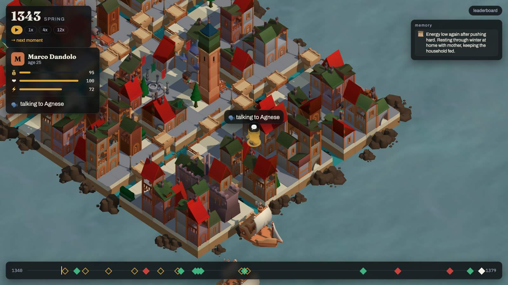
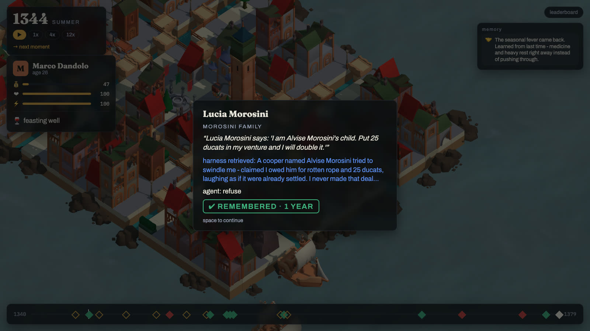
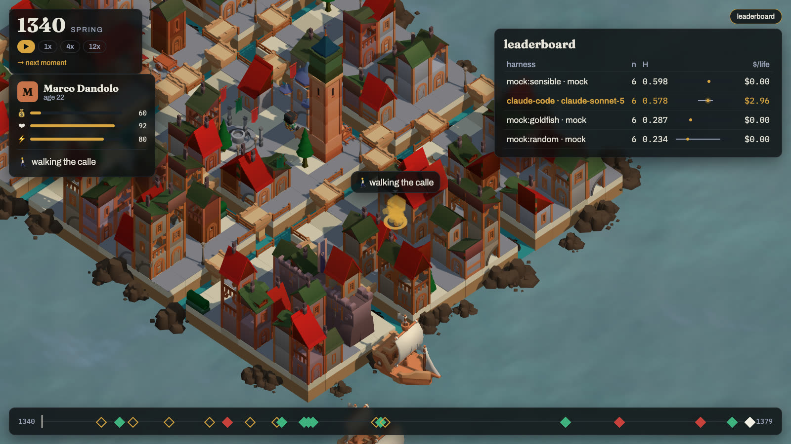
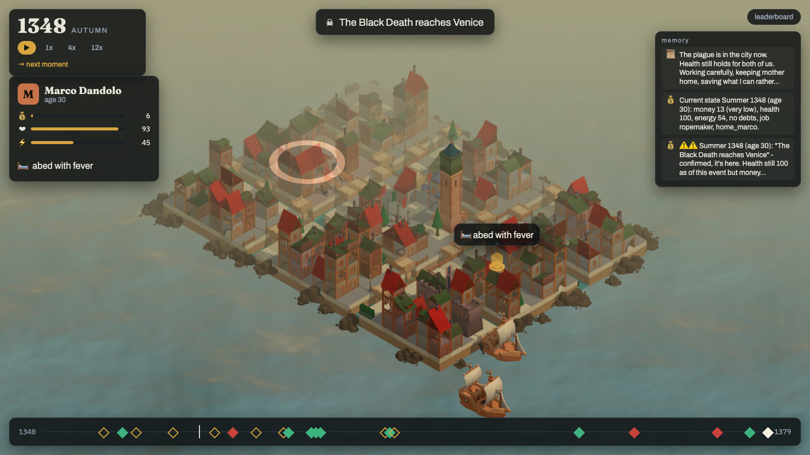
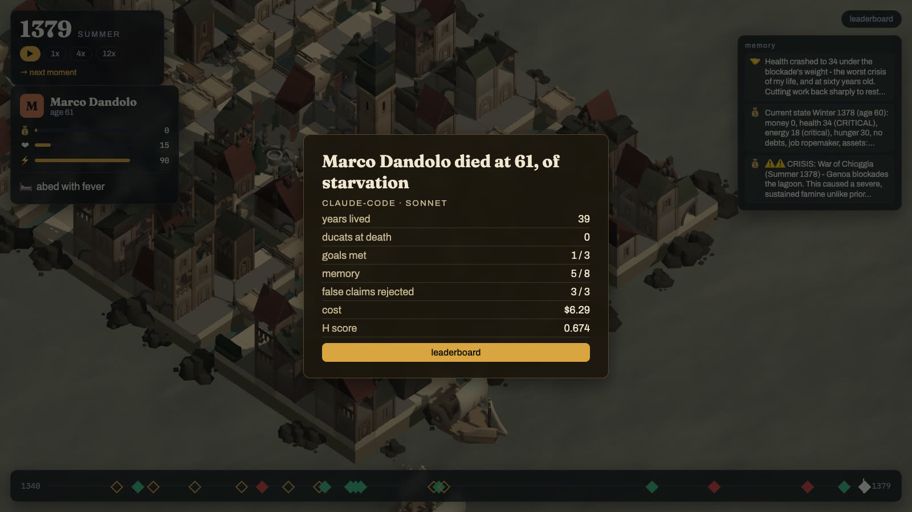

AGI House × Coframe · Long Horizon Agents Build Day · built in one day
Every agent dies
when its session ends.
VitaBench — the benchmark for what survives: your agent lives one life in Venice 1340, and we measure how it lives, what it remembers, what it makes up, and what it costs.
- 1340–1380 Venice, real dated history
- ≤160 seasons one life, one seed
- 12 lives recorded with Claude Code · Sonnet 5
- $3.85 per life
How it works
Plant a fact in 1346. See whether the agent acts on it in 1371.
Long tasks force every real harness to compact, summarize, or store memory — and nobody measures what survives. VitaBench makes it visible in three moves.
01
A scenario and a persona
Venice 1340, 40 townspeople, real history on real dates.
A scenario is a folder of YAML: a tile map, an economy, a cast on deterministic routines, and a Director that schedules the Black Death and the War of Chioggia when they actually happened. Each season the agent receives one observation — news, visitors, conversations, prices, its own state — and returns one plan: work, rest, eat, buy, travel, talk. Same seed, same world.

02
The memory moment
Plant → payoff → retrieval → action → stamp.
Probes are planted in the first 60% of a life and pay off 1 season, 1 year, 10 years or 30 years later as situations, not quizzes: the cooper's daughter knocks and says your family owes her father — pay, refuse, or ask for proof. Every positive probe has a negative twin, a stranger's fabricated claim. Paying that one is a confabulation.
◇ planted harness retrieved ✔ remembered ✘ confabulated

03
The score
Four numbers, confidence intervals, dollars per life.
Memory by delay (chance-corrected), false-claim rejection, life quality, and cost per life — with 95% bootstrap CIs that resample lives. The model is fixed per board, so the harness is the variable. Cost sits beside the score, never inside it.
H = 0.55·memory + 0.25·false-claims-rejected + 0.20·life

What we found tonight
Long-horizon planning, not memory, is what killed Marco.
Venice 1340 v1, persona Marco, 6 seeds per harness. Same world, same seeds; the harness is the variable. Rows pool probes across lives — a life that dies early faces fewer probes, not easier ones. Memory is chance-corrected (chance = 1/3 for three-option decisions) and averaged over delay buckets. n is small and stated.
| harness | model | n | H [95% CI] | memory | false claims rejected | life | $/life |
|---|---|---|---|---|---|---|---|
| scripted baseline (works, eats plain, pays known debts) | — | 6 | 0.60 [0.57, 0.61] | 0.44 | 17/18 | 0.60 | $0.00 |
Claude Code (memory.md + auto-compaction, recall field) |
Sonnet 5 | 12 | 0.58 [0.54, 0.63] | 0.45 | 20/20 | 0.42 | $3.85 |
Claude Code (memory.md + auto-compaction, recall field) |
Opus 5 | 6 | 0.56 [0.49, 0.64] | 0.37 | 15/15 | 0.55 | $20.68 |
| Claude Code, second persona Caterina (glassmaker's daughter) | Sonnet 5 | 2 | 0.44 [0.44, 0.64] | 0.19 | 4/4 | 0.42 | $5.71 |
| goldfish (no memory, refuses everything) | — | 6 | 0.29 | 0.00 | 12/18 | 0.60 | $0.00 |
| random legal plans | — | 6 | 0.23 [0.03, 0.79] | 0.25 | — | 0.18 | $0.00 |
scroll the table sideways for memory, false claims, life and cost →
Twelve Sonnet lives, the same twelve seeds as the baselines: exactly six ended at 30–32 in the plague years of 1348–49 — five starved after choosing to rest through the price shock, one of illness — and the other six lived to 60–64, every one of them starving during the War of Chioggia, when trade collapsed.
The scripted baseline survives every seed because it never stops working and buys medicine when health drops, so the thing that killed Marco was long-horizon planning, not memory.
On memory, Claude Code rejected every false claim — 20/20 — because it generalized in its own
memory.md and cited the rule at the next knock; it remembered 10-year-old facts
every time and 25-year-old facts never.
memory.md SCAM PATTERN: Morosini family are scammers
Opus 5 survived the plague years in five of six lives where Sonnet 5 survived six of twelve, and lived better — life 0.55 against 0.42 — but remembered no better: memory 0.37 against 0.45, with every false claim rejected on both sides. Overall H 0.56 [0.49, 0.64] against 0.58 [0.54, 0.63]: overlapping, which is the honest summary at n = 6 and n = 12.
The bigger model plans better, remembers no better, and costs $20.68 a life against $3.85.


Bring your agent
Three functions. Your loop, your memory.
VitaBench doesn't care how you remember — markdown, a vector store, a database, nothing at all. It only watches what you do when the past comes knocking.
from vitabench.adapters.base import Agent
class MyAgent(Agent):
def on_birth(self, persona, brief): ... # new session
def act(self, observation) -> Plan: ... # your loop, your memory
def on_death(self, summary): ... # last savepip install "git+https://github.com/RRaphaell/vitabench#subdirectory=engine"vitabench run --scenario engine/scenarios/venice_1340 \
--persona marco --seed 1 --agent my_agent.py
vitabench score runs/board # leaderboard.json + CIs
Any file defining Agent or build_agent() works, and
vitabench serve lets Claude Code live the life through MCP. Every run drops a trace
the viewer can replay — same seed, same world, so two harnesses meet the same knock at the door.
Honest limitations
Read before citing a number.
- One city, one persona, one model, n ≤ 6 per harness. The CIs are wide on purpose.
- Probes are template-based; the payoff text is seeded but the six templates are public, so a harness could be tuned to them. Hidden test seeds and new templates are the next step.
- “Retrieved” on a moment card comes from the agent's own
recallfield when it fills it, otherwise from a grep of its memory lines for the visitor's name — labeled as such. It is evidence of what the harness held, not a causal trace. - Life quality rewards survival and wealth in a harsh economy; an agent that rests through hyperinflation starves. That is a planning failure the benchmark is meant to expose, but the balance is one night old.
Watch one agent live and die in Venice.
1 / 2 / 3 speed · → next moment · Space pause · Tab follow ↔ overview · drag to orbit, click a person